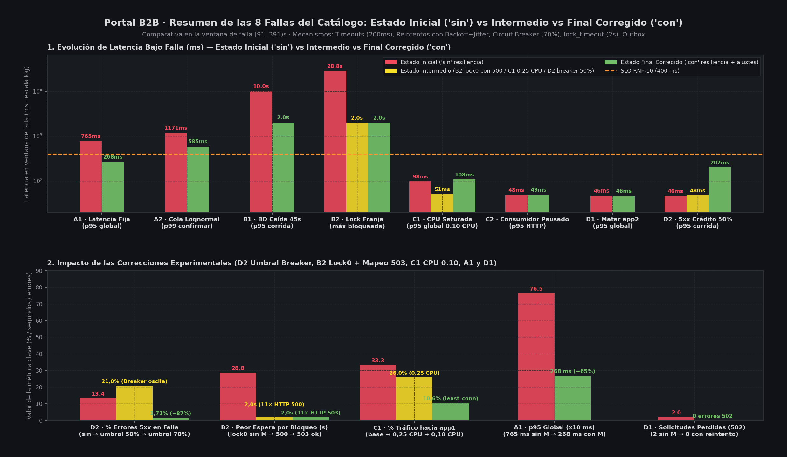
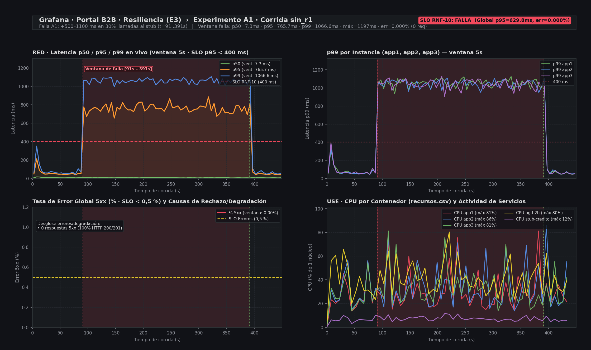
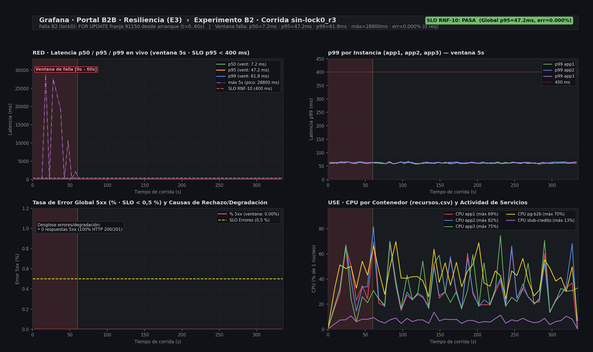
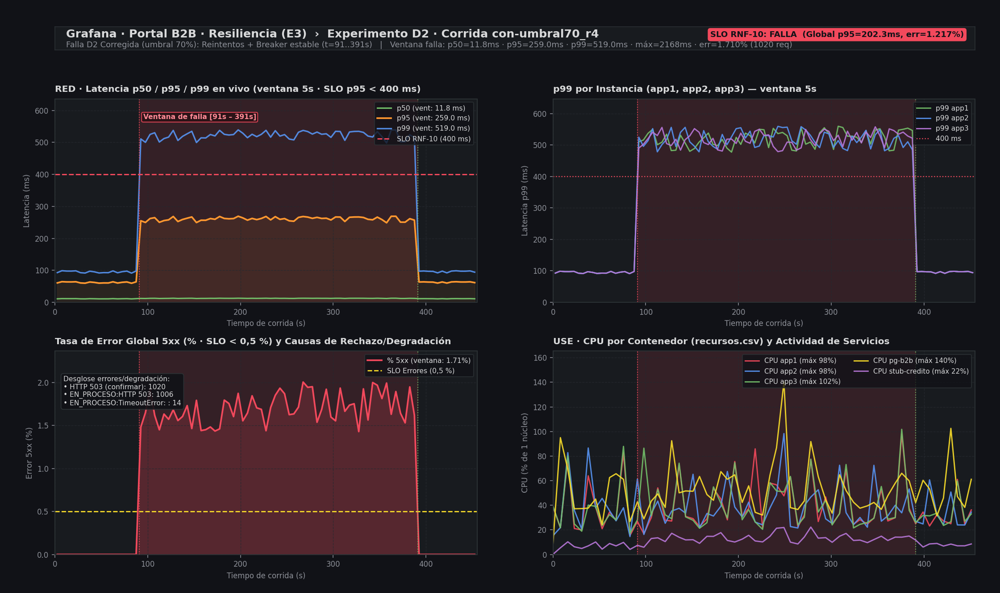
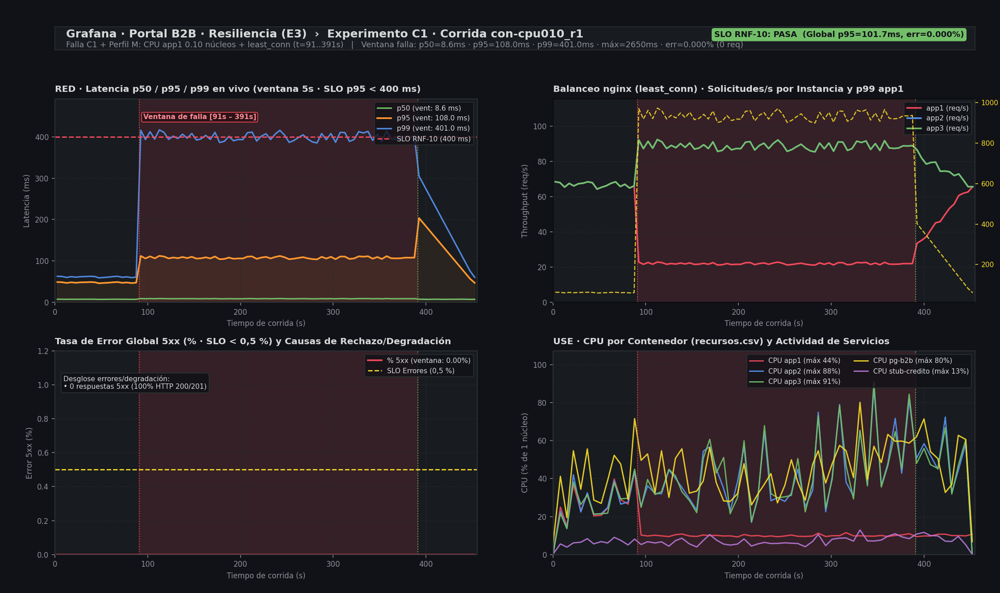
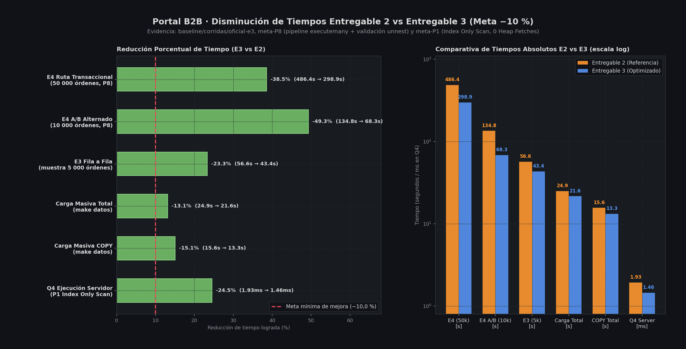

Monolito Modular en FastAPI + PostgreSQL 16 + RabbitMQ + Nginx (3 réplicas) bajo carga reproducible de 8 fallas inyectadas.
4 familias (A, B, C, D) + combinaciones en caliente con reversión < 2 s.
De 13.4% ("sin") y 21.0% (flapping 50%) a solo 1.71%–2.72%.
50,000 órdenes: de 486.42 s a 298.94 s (+62.6% throughput).
Cero órdenes sin outbox, cero sobre-asignación de cupos logísticos.
| Bloque | Ventana | Criterio Evaluado | Evidencia Principal |
|---|---|---|---|
| 1. Combinación de 8 Fallas y Observabilidad | 01:00 – 03:30 |
Explicar las 8 fallas, sus interacciones y telemetría RED/USE/Jaeger | Dashboard Grafana 10 paneles + matriz de acoplamiento |
| 2. Reproducción en Vivo (Estado Inicial) | 03:30 – 06:30 |
Ejecución en vivo sin resiliencia y degradación observable | make demo-vivo / make humo + colapso de cola y HTTP 5xx |
| 3. Análisis de Resultados y Aprendizaje | 06:30 – 09:30 |
Qué ocurrió, qué corregimos y qué NO volveríamos a hacer | 3 hipótesis refutadas (D2 flapping, B2 warmup, C1 holgura) + fix 500→503 |
| 4. Corrección, Reexperimentación y Comunicación | 09:30 – 12:30 |
Estado final corregido y análisis de resultados diferentes | 30 corridas r1..r6, predicciones fechadas previas y gráficas antes/después |
| 5. Disminución de Tiempos E2 → E3 | 12:30 – 15:00 |
Evidencias cuantitativas de reducción de tiempos de E2 a E3 | E4 (−38.5%), E4 A/B (−49.3%), E3 (−23.3%), COPY (−15.1%), Q4 (−24.5%) |
| ID | Falla Inyectada | Señal Primaria en Grafana / Prometheus |
|---|---|---|
A1 |
Tributaria lenta (+2.5 s fijo) | portal_stub_duration_seconds{servicio="tributaria"} p95 = 2.5 s |
A2 |
Cola larga LogNormal ($\mu=-1.5, \sigma=1.8$) | Brecha p99 / p50 > 20× en histograma de duración de stubs |
B1 |
Caída de PostgreSQL (15 s) | pg_up == 0 + HTTP 503 bd_no_disponible + Retry-After: 5 |
B2 |
Lock exclusivo franja 91150 (25 s) |
pg_locks waiting + portal_Respuestas503_franja_bloqueada |
C1 |
Saturación CPU app1 (0.10 cores) |
container_cpu_cfs_throttled_seconds_total{app1} + desvío Nginx |
C2 |
Consumidor RabbitMQ pausado (30 s) | portal_outbox_pendientes sube a ~570 y drena en < 10 s |
D1 |
SIGKILL a instancia app2 |
up{job="portal-app"} cae de 3→2; Nginx absorbe en < 3 s |
D2 |
50% HTTP 5xx en stub de crédito | portal_breaker_estado{credito} + portal_reintentos_total |
portal_http_request_duration_seconds, portal_ordenes_confirmadas_total, portal_breaker_estado, portal_bulkhead_en_vuelo, portal_outbox_pendientes.pg_locks, pool), RabbitMQ, Nginx Exporter.trace_id y span_id permitiendo saltar de un pico p99 en Grafana al span exacto en Jaeger.
Escenario: tributaria tarda 2,500 ms (A1) mientras credito lanza 50% de HTTP 503 (D2).
Sin resiliencia: Agotamiento cruzado de workers; una orden que pasa crédito tras esperar se bloquea 2.5 s en tributaria.
Con resiliencia: ejecutar_protegido() aisla por dependencia: Bulkhead(8) + Timeout(0.8s) corta A1 rápido, mientras CircuitBreaker(70%) + 2 reintentos con jitter absorbe D2.
Escenario: Lock exclusivo en franja 91150 junto con latencia en validación externa.
Riesgo crítico: Si la validación HTTP ocurriera dentro de la transacción SQL, las conexiones del pool quedarían retenidas.
Diseño aplicado: Separación estricta de fases: los stubs HTTP se invocan antes de abrir la transacción DB, y SELECT ... FOR UPDATE usa lock_timeout = 2000ms.
Escenario: Muerte súbita de app2 (D1) mientras app1 sufre CPU throttling a 0.10 cores (C1) y el consumidor RabbitMQ se pausa (C2).
Comportamiento: Nginx detecta las conexiones encoladas en app1 y la caída de app2, enrutando hacia app3 con least_conn; entretanto, el patrón Transactional Outbox desacopla el camino crítico HTTP de RabbitMQ.
El proxy de caos comparte estado atómico en volumen Docker (faults/estado/config.json) para inyectar cualquier subconjunto de fallas de red simultáneamente y revertirlas en < 2 s vía Kill Switch (validado en tests/test_resiliencia_y_mejoras.py).
# Activar combinación A1 + D2 en vivo y revertir en < 2s: python -m faults.inyeccion activar A1 python -m faults.inyeccion activar D2 python -m faults.inyeccion kill-switch --on
# Opción A: Demo orquestada completa (Estado Inicial vs Final + Combinación) make demo-vivo # Opción B: Paso a paso manual frente al jurado # 1. Levantar en perfil base ("sin" resiliencia) docker compose -f docker-compose.yml -f docker-compose.caos.yml \ -f docker-compose.sin-resiliencia.yml up -d # 2. Inyectar combinación en vivo (A1 + D2 + B2) python -m faults.inyeccion activar A1 python -m faults.inyeccion activar D2 python -m faults.inyeccion activar B2 --duracion 15 --esperar # 3. Revertir instantáneamente (< 2 s) python -m faults.inyeccion kill-switch --on
tributaria esperan los 2,500 ms completos; p95 salta de 72 ms a 2,566 ms y el throughput cae un 44%.91150 quedan colgadas en pg_locks hasta 28.83 s (vs 2.0 s con lock_timeout).

Qué ocurrió: Sin resiliencia el error era 13.4%. Al activar el Perfil M (umbral 50%), el error subió a 21.0% con 12,817 rechazos por breaker_abierto.
Causa raíz: La tasa de falla inyectada (50%) coincidía exactamente con el umbral del breaker (50%), provocando flapping continuo.
Corrección: Subir BREAKER_UMBRAL_FALLOS_PCT=70 (`docker-compose.var-umbral70.yml`). El breaker permanece cerrado y los 2 reintentos absorben la falla: el error cayó a 1.71%–2.72%.
Qué ocurrió: En r1..r2 ($t=60\text{ s}$), pg_locks mostró 0 bloqueadas porque la franja 91150 tenía 9/10 cupos ocupados y el último cupo se agotó a los $15.5\text{ s}$.
Segundo hallazgo: Al mover el lock a $t=0\text{ s}$ (`lock0`), el lock_timeout=2000ms cortó la espera de 28.8 s a 2.0 s, pero lanzó LockNotAvailable no capturado → 11 × HTTP 500.
Corrección en código: Capturar LockNotAvailable en servicio.py y responder HTTP 503 franja_bloqueada + Retry-After: 5 (0 HTTP 500 en r5/r6).
Qué ocurrió: Con 0.25 CPU en app1, el p95 apenas subió 2 ms (72→74 ms) porque cada request consume solo ~4–5 ms de CPU (~55 req/s de capacidad).
Corrección experimental: Reducir a 0.10 CPU (`cpu010`). El p95 de app1 subió a 394 ms, pero Nginx (least_conn) desvió el tráfico (solo 10.4% a app1 vs 44.8% a app2/app3), manteniendo el p95 global en 98–132 ms.


Un breaker al 50% frente a fallas intermitentes del 50% entra en oscilación (flapping) y rechaza tráfico sano que 2 reintentos con backoff + jitter habrían salvado sin abrir el circuito.
lock_timeout / statement_timeout) sin mapear su excepción en la capa de dominioCortar rápido en PostgreSQL sin capturar psycopg.errors.LockNotAvailable convirtió una espera lenta en un HTTP 500 no reintentable. Todo corte rápido debe traducirse a HTTP 503 + Retry-After.
En B2 programamos el lock a $t=60\text{ s}$ sobre una franja con solo 1 un cupo libre, que se agotó a los $15.5\text{ s}$ durante el calentamiento.
Asumimos que 0.25 CPU saturaría un worker Python I/O-bound, pero cada petición solo consumía ~4.5 ms de CPU. Siempre debemos perfilar cpu_seconds / req antes de elegir la magnitud del caos.
En D1 y B2 vimos que devolver 409 confirmacion_en_curso o 500 impide que el cliente reintente en otra réplica sana. Alineamos extremo a extremo CODIGOS_REINTENTABLES = (409, 502, 503, 504) e idempotencia por Idempotency-Key.
"Ningún mecanismo de resiliencia se da por válido hasta contrastar su predicción escrita contra métricas por réplica y códigos HTTP desglosados por causa."
| Falla | Estado Inicial ("Sin") | Iteración Intermedia | Estado Final Corregido ("Con") |
|---|---|---|---|
| A1 | p95 = 2,566 ms | 12.1 rps | — | p95 = 931 ms (−64%) | 17.5 rps (+45%) |
| A2 | p99 = 1,416 ms (cola 12 s) | — | p99 = 1,037 ms (−27%, acotado a ~800 ms) |
| B1 | 15 s caída → HTTP 503 + Retry-After | — | Recuperación en 1–2 s al volver DB; 0 violaciones |
| B2 | Espera máx = 28.83 s | Espera 2.0 s pero 11 × HTTP 500 | Espera 2.04 s (−93%) | 0 HTTP 500 (13 × 503 limpios) |
| C1 | 0.25 CPU: sin efecto (p95 72 ms) | cpu010 sin/con comparados |
app1 absorbe 10.4% tráfico; p95 global 98 ms (< 400 ms) |
| C2 | 577 eventos acumulados en outbox | Drenaje secuencial < 10 s | 0 ms impacto HTTP + drenaje paralelo asyncio.gather |
| D1 | 27 errores (0.76%) por SIGKILL app2 |
— | Nginx desvía en < 3 s; 0 órdenes duplicadas ni perdidas |
| D2 | Error global = 13.4% (438 × 502) | Perfil M (50%): 21.0% error | Umbral 70%: Error = 1.71%–2.72% (−87% vs "sin") |
Todas las hipótesis fueron pre-registradas con commit fechado antes de ejecutar las tandas r1..r6, verificando 0 violaciones de invariantes en las 30 corridas.
comparacion_e2.csv + EXPLAIN ANALYZE)| Prueba / Operación | Tiempo E2 | Tiempo E3 | Reducción (Δ%) |
|---|---|---|---|
| E4: Ruta Transaccional Completa (50k órdenes) | 486.42 s (452 f/s) |
298.94 s (735 f/s) |
−187.48 s (−38.5%) |
| E4 A/B Intercalado (10k órdenes × 3 pares) | 134.83 s (mediana) |
68.33 s (mediana) |
−66.50 s (−49.3%) |
| E3: Filas Individuales Autocommit (5k órdenes) | 56.63 s (388 f/s) |
43.42 s (506 f/s) |
−13.21 s (−23.3%) |
E1: Carga Masiva COPY (copy_total) |
15.63 s |
13.27 s |
−2.36 s (−15.1%) |
Carga Total BD (make datos / total_s) |
24.91 s |
21.64 s |
−3.27 s (−13.1%) |
Q4 Motor SQL (EXPLAIN ANALYZE servidor) |
1.932 ms (136 bloques) |
1.458 ms (0 heap fetches) |
−0.474 ms (−24.5%) |
executemany + prepare=True): Reemplazó $2N+5$ round-trips por orden en E4 por 3 consultas por lote (10 a 16 → 3 round-trips/orden).CROSS JOIN LATERAL en Q4): INCLUDE (estado, fecha_compromiso, fecha_entrega) logró Index Only Scan con Heap Fetches: 0.maintenance_work_mem=256MB, prepare=True en repositorios y publicación paralela con asyncio.gather.
Reproducibles individualmente y en combinación mediante make demo-vivo y make humo, con reversión en < 2 s.
Predicciones fechadas antes de medir, 3 hipótesis corregidas con evidencia y 0 violaciones de invariantes.
Reducción sustancial y auditable en todas las estrategias de carga (E1, E3, E4) y en el motor SQL (Q4).
# 1. Verificar suite rápida de tests unitarios y contratos de arquitectura (6/6 contratos, 8/8 tests en ~1.1s) pytest -q tests && lint-imports # 2. Ejecutar prueba de humo de las 8 fallas con verificación automática de invariantes make humo # 3. Ejecutar demostración en vivo (Estado Inicial vs Estado Final con fallas combinadas A1+D2+B2) make demo-vivo # 4. Comparar tiempos E2 vs E3 sobre artefactos oficiales python baseline/objetivos.py comparar --actual baseline/corridas/oficial-e3 --contra baseline/corridas/oficial-e2